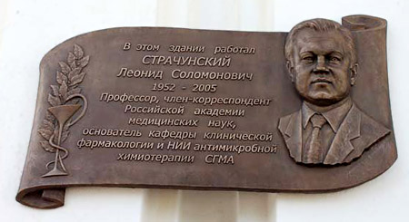

В понедельник, 28 июня 2010 г., в Смоленске на фасаде главного корпуса Смоленской государственной медицинской академии состоялось открытие мемориальной доски памяти члена-корреспондента РАМН, профессора, д.м.н. Леонида Соломоновича Страчунского.
В понедельник, 28 июня 2010 г., в Смоленске на фасаде главного корпуса Смоленской государственной медицинской академии состоялось открытие мемориальной доски памяти члена-корреспондента РАМН, профессора, д.м.н. Леонида Соломоновича Страчунского (1952-2005). В Смоленском государственном медицинском институте, ставшим впоследствии академией, Леонид Соломонович проработал многие годы. Здесь в 1985 г. он организовал и возглавил сначала курс, а затем (в 1987 г.) кафедру клинической фармакологии. В 1999 г. на базе кафедры клинической фармакологии был создан НИИ антимикробной химиотерапии. И кафедра клинической фармакологии, и НИИ антимикробной химиотерапии являются хорошо известными и уважаемыми организациями в профессиональном медицинском сообществе не только в России и странах СНГ, но и во всём мире.
В церемонии открытия доски приняли участие заместитель губернатора Смоленской области Сергей Ростиславович Кривко, депутат Смоленской областной думы Николай Алексеевич Дементьев, главный врач ОГУЗ «Смоленская областная клиническая больница» Евгений Иванович Каманин, ректор ГОУ ВПО СГМА Росздрава Игорь Викторович Отвагин, президент ГОУ ВПО СГМА Росздрава Владимир Григорьевич Плешков, коллеги, ученики, друзья и родственники Леонида Соломоновича Страчунского.

Выдающийся учёный-новатор, ведущий российский специалист в области антимикробной химиотерапии, один из самых молодых членов-корреспондентов РАМН Леонид Соломонович Страчунский внёс огромный вклад в формирование и развитие современной клинической фармакологии и антимикробной химиотерапии в России.
Леонид Соломонович Страчунский был ярким, талантливым, неординарным человеком, обладавшим колоссальной энергией и энтузиазмом. Его жизнь, весь трудовой путь, стремления, свершения и надежды были связаны с созданными им кафедрой клинической фармакологии и НИИ антимикробной химиотерапии, каждодневной кропотливой работой с учениками, общением с коллегами. Его имя навсегда останется в памяти сотрудников, преподавателей и студентов СГМА, медиков России.